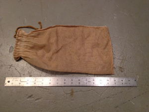
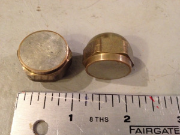
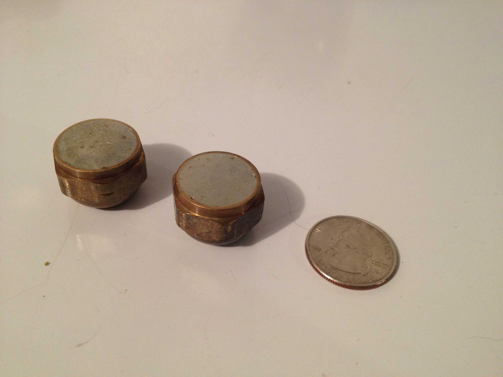
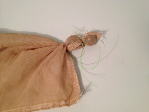
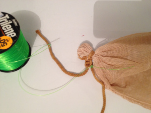
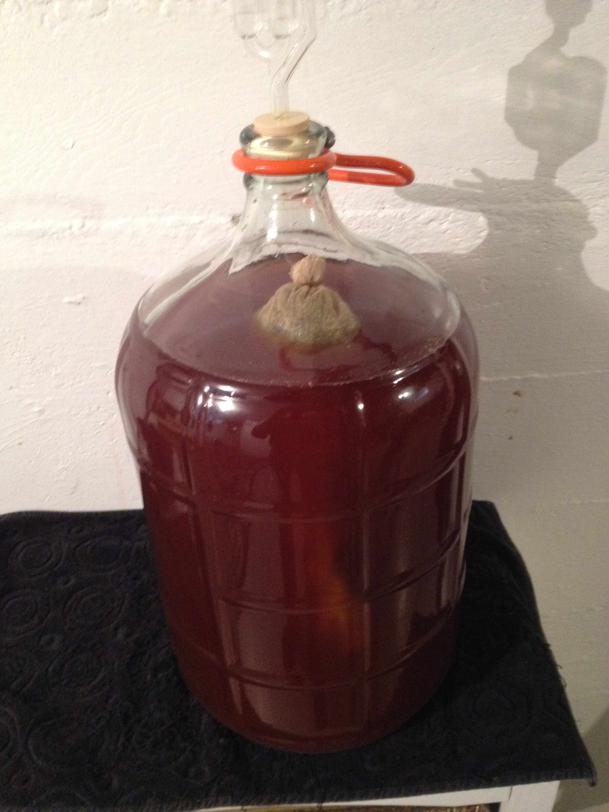
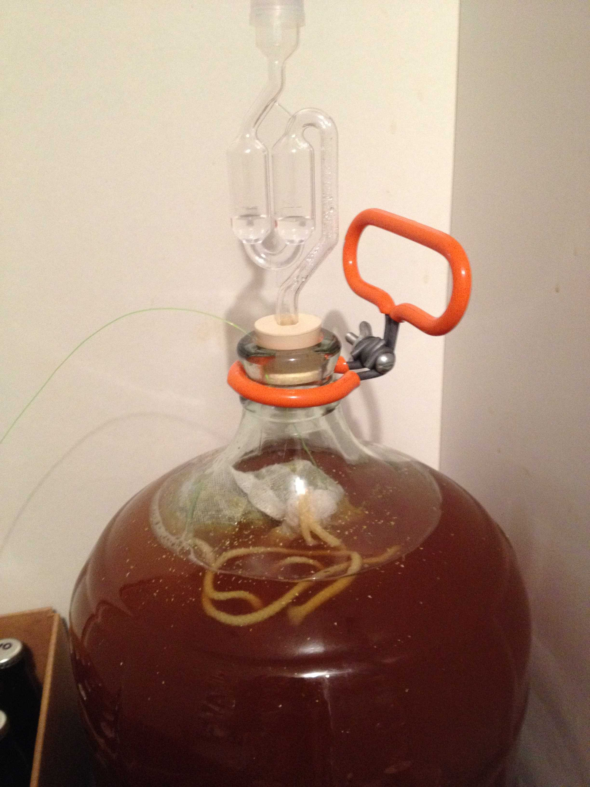

Dry hopping, or adding hops in the conditioning vessel (or secondary fermentor), is the best way I've found to get good hop aroma. When I first started dry hopping, I would push the hop cones through the narrow neck of my 5-gallon glass carboy. To my dismay, the hops floated on top and most of them didn't seem to ever touch the beer. Stirring the beer helped a bit, but the contact between hops and beer was still limited. And cleaning the hops out of the carboy was a mess. A lot of people use hop pellets for dry-hopping, but since I grow my own hops, I'm interested in using the whole cones.
I now use a large coarse-mesh bag for dry hopping, with weights in the bag to pull all of the hops into the beer. It seems like a good idea that I haven't seen written about elsewhere, so I'm writing a blog post about the technique. (Edit: I just read on Norm Pyle's Hops FAQ: "some brewers use a sanitized hop bag and marbles to sink the hops for maximum contact." So, apparently it's true that "what has been done will be done again; there is nothing new under the sun.")
1. Large Mesh Bag
I use a large nylon mesh straining bag to hold the hops. I prefer a fairly large bag, so that the hops are free to roam about within the confines of the mesh enclosure. Figure 1 shows the mesh bag I use, approximately 15" × 8" (38 cm × 20 cm). I thoroughly wash it and soak it in Star-San before each use.
 Figure 1. Large mesh straining bag for holding weights and hops.
2. Weights
Before adding the hops to the sanitized mesh bag, I add two weights. The purpose of the weights is to drag the bag down into the beer and drown the hops in beer. (I clean and sanitize the weights before adding them to the bag.) The weights must satisfy several criteria: (1) they need to fit through the (small) opening of the carboy; (2) they need to be heavy enough to cause the bag and hops to sink; (3) they should not contain iron or lead. In my case, I took two brass compression caps measuring about ⅞" (2.22 cm) to 1" (2.54 cm) across and filled them with lead-free solder. Each filled cap weighs 1.6 oz (45 g), and the two weights together are just about sufficient to weigh down one ounce of hops. For two ounces of hops, use two bags and four weights total. These weights are just small enough to fit through my glass carboy when they are inside the mesh bag. If you have a secondary fermentor with a large opening, the size of the weights probably doesn't matter.
 Figure 2. Brass weights (compression caps) filled with lead-free solder. A ruler (in inches) shown for scale.
 Figure 3. Brass weights (compression caps) filled with lead-free solder and a US quarter shown for scale.
3. Fishing Line
I use fishing line for two purposes: (1) to keep the weights in the bag separate from each other and from the hops, and (2) to provide a "lifeline" to remove the bag.
I found that allowing the hops and weights to mix together caused clumping, and made removal of the bag a bit difficult. I now add one weight to a bottom corner of the mesh bag, tie it off with fishing line, add the second weight, tie that off with fishing line, and then add the hops. This makes adding and removing the bag a little easier. The result of adding weights and tying them off is shown in Figure 4, using a dry (not sanitized) bag and no hops.
 Figure 4. The mesh bag with two weights tied into a corner. 40-lb green fishing line is used for visual effect, but 8-lb line works well, too.
Once the bag is filled with hops, I pull the drawstrings of the bag closed and knot them together. I then tie some fishing line to the bag drawstring (near the knot) and let this line come along the edge of the rubber stopper and outside the carboy. The rubber stopper seals around the fishing line nicely, allowing no air to escape except through the air lock. When the time comes to remove the bag, I pull on the fishing line to pull the bag out of the beer.
 Figure 5. The mesh bag with fishing line tied to one of the drawstrings.
4. Adding the Hops to the Beer
The procedure of adding the hops is pretty much what you'd guess it is: I remove the rubber stopper from the carboy, then add the mesh bag filled with weights and hops (starting with the weights). I let one end of the fishing line tied to the drawstring remain outside the carboy. I replace the rubber stopper.
 Figure 6. Mesh bag containing weights and hops (mostly) sinks into the beer.
 Figure 7. Closeup of mesh bag inside the carboy. (This is a different batch of beer.) You can see the fishing line extending from the opening of the carboy.
5. Removing the Hops
I used to remove the hops before racking to the next container, but that might yield excessive grassy notes. Instead, I now rack the beer to the next container and then remove the hops from the empty carboy.
When it's time to remove the hops, I wash and sanitize my hands, and pull on the fishing line. When the hops come out of the carboy, the small neck squeezes most of the beer out of the hops and back into the carboy. Some beer will rise up and flow over the opening, but by going slowly this can be minimized and wiped up with a paper towel. The weights come out last, and since they haven't mixed with the wet hops, they are easily removed. The fishing line can be easily cut off and discarded.
Navigate to:
AlchemyOverlord home page